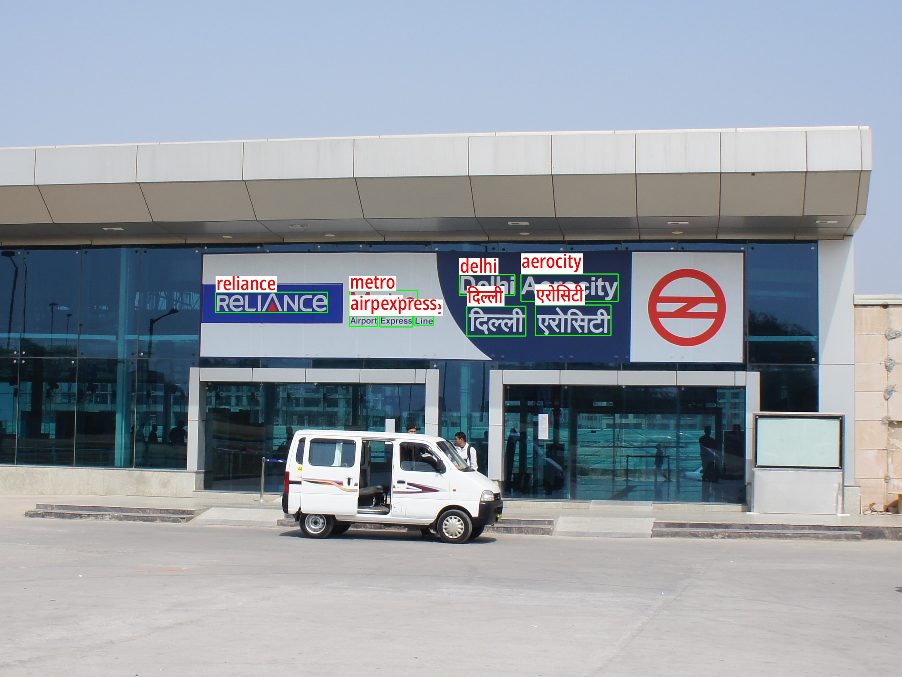
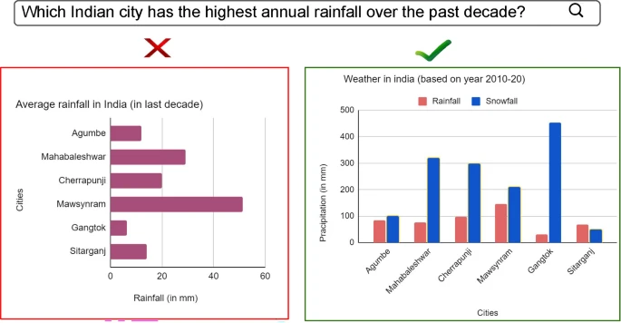
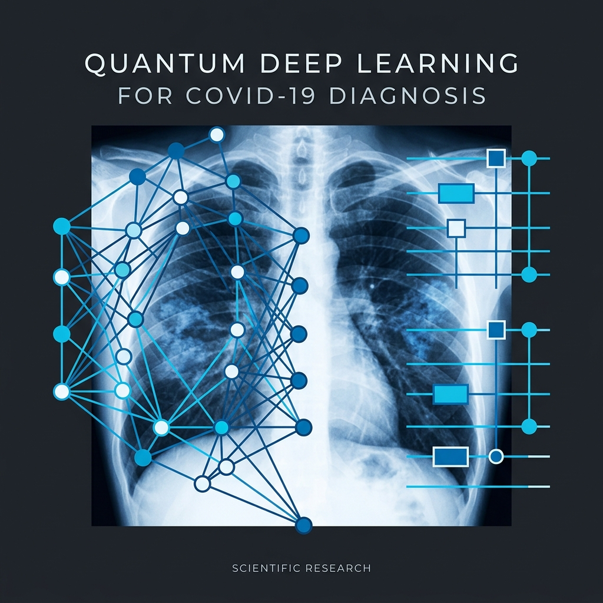
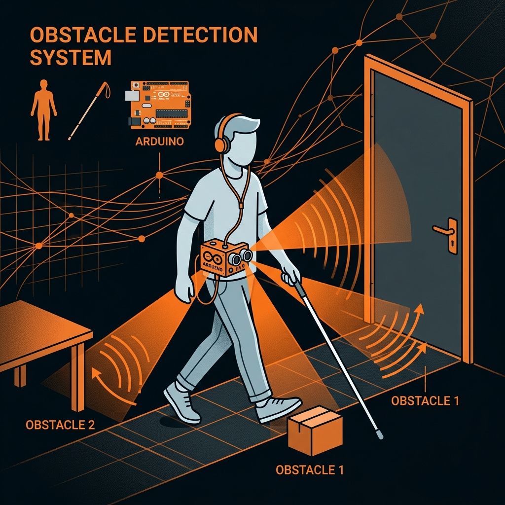

|
Anik De I am a PhD scholar at the Indian Institute of Technology Jodhpur, advised by Dr. Anand Mishra. My research interests include Computer Vision and Natural Language Understanding, with a primary focus on Scene Text Perception. I work on building recognition engines, document layout analysis, and visual question answering for document images. I previously served as a Senior Project Engineer at IIT Jodhpur (Dec 2022 – Jul 2025), where I enhanced state-of-the-art scene text recognition engines, generated synthetic data for training, and developed retrieval systems for VQA. I led work on IndicPhotoOCR — an open-source tool for detecting and recognising text across 11 Indian languages and English, funded by the Government of India's Bhashini programme. I hold an MTech in Computer Science from Assam University and a BTech in Electronics & Communication from NERIST. |
{kind=link}
Recent News
|
![[photo]](images/anik_icvgip2025.jpeg){kind=link}
![[photo]](images/anik_premi2025.jpeg){kind=link}
PublicationsMy research is focused on Computer Vision, Document AI, and Deep Learning. Papers related to my primary research directions are highlighted. |
|
 |
Bharat Scene Text: A Novel Comprehensive Dataset and Benchmark for Indian
Language Scene Text Understanding
A. De, A. S. Penamakuri, R. Yadav, A. Rathore, H. Shah, D. Sharma, S. Agarwal, P. Kumar, A. Mishra International Journal on Document Analysis and Recognition (IJDAR), 2026 |
|
 |
Bridging Language to Visuals: Towards Natural Language Query-to-Chart Image
Retrieval
N. Verma, A. De, A. Mishra International Journal of Multimedia Information Retrieval (IJMIR), 2024 |
ProjectsA selection of research and engineering projects completed during my academic career. |
|
 |
COVID-19 Diagnosis using Quantum Deep Learning
Anik De Master Thesis, Assam University — Sept 2021 – Sept 2023 Developed a classification system for diagnosing COVID-19 and pneumonia from medical lung images. Utilized fine-tuned pre-trained CNN models for feature extraction and implemented a Rotation Entangled Parameterized Circuit to optimize the solution. |

|
Autonomous Vehicle Navigation System
Anik De Graduation Project, N.E.R.I.S.T — Oct 2019 – June 2020 Implemented Go to Goal Behavior on a TurtleBot3 Burger using multi-sensor fusion. Modelled kinematics for differential drive with PID motion control and deployed/tested the autonomous navigation system in the Webots robotic simulator. |
|
 |
Obstacle Detection System for Visually Impaired
Anik De 2nd Year Project, N.E.R.I.S.T — Jan 2018 – May 2018 Created a system to detect obstacles within a range of 5 metres and provide directional audio guidance to the user through an integrated audio system built with Arduino and APR33A3. |
Experience |
|
IIT Jodhpur |
Senior Project Engineer (CV | NLU)
Department of Computer Science and Engineering — Jun 2024 – Present Developing synthetic data for image generation; building state-of-the-art recognition engines; conducting document layout analysis with transformer-based architectures; designing retrieval systems for chart data. |
IIT Jodhpur |
Research Assistant
Department of Computer Science and Engineering — Jul 2023 – Jun 2024 Built a transformer-based model for Visual Question Answering as a proof-of-concept for image data analysis; developed a graph neural network model for object detection in images. |
IIT Jodhpur |
Junior Research Assistant
Department of Computer Science and Engineering — Dec 2022 – Mar 2023 Implemented image retrieval using a Siamese transformer network; conducted document image analysis including segmentation, skew estimation, and layout analysis; performed data engineering on document images. |
IIIT Manipur |
Summer Intern
Imphal, Manipur — June 2019 – July 2019 Prototyped an autonomous self-driving car navigating around a confined space. |
Education |
|
Assam University |
MTech in Computer Science
Silchar, Assam, India — Sept 2023 CGPA: 7.68 / 10 |
N.E.R.I.S.T |
BTech in Electronics and Communication
Nirjuli, Arunachal Pradesh, India — Aug 2020 CGPA: 7.35 / 10 |
V.K. Vidyalaya |
High School (CBSE)
Doyang, Nagaland, India — April 2014 CGPA: 9.2 / 10 |
Skills |
|
Technical |
Programming: Python, C/C++, Git, GDB, CMake, LaTeX, PHP, MySQL
Libraries: TensorFlow, PyTorch, OpenCV, scikit-learn, Jupyter Tools & Platforms: Linux, Docker, Miniconda, Webots (robot simulator), ISIS Proteus Simulator Hardware: 8051 (microcontroller), 8085 (microprocessor), Raspberry Pi 4, NodeMCU |
Activities |
|
Extracurricular |
2nd prize at Robowar Competition at college level, 2015
General Secretary of NERIST Electronic Society (NES), 2018–19 Member of organising committee for several cultural events at college |
|
Design inspired by Jon Barron's website. Source code adapted from jonbarron_website. |